Registered S3 method overwritten by 'GGally':
method from
+.gg ggplot2
dead_by_daylight <-read_csv('Dead by Daylight data.csv')
Rows: 2879 Columns: 8
── Column specification ────────────────────────────────────────────────────────
Delimiter: ","
chr (4): Map, Killer, Comments, Season
dbl (3): # Finished generators, # Escaped Survivors, # Hatch escapes
lgl (1): SBMM
ℹ Use `spec()` to retrieve the full column specification for this data.
ℹ Specify the column types or set `show_col_types = FALSE` to quiet this message.
dead_by_daylight
# A tibble: 2,879 × 8
Map Killer `# Finished generators` `# Escaped Survivors` Comments
<chr> <chr> <dbl> <dbl> <chr>
1 BAP Deathslinger 5 4 <NA>
2 MCM Cannibal 2 0 <NA>
3 SH Huntress 5 4 Farm
4 CF Myers 3 0 Mori
5 AVW Hillbilly 5 4 1 hatch
6 RF Ghost Face 5 4 Fake AFK + …
7 OR Cannibal 5 1 1 hatch + c…
8 HA Huntress 5 4 Farm + 1 ha…
9 CP Spirit 5 0 Facecamp + …
10 YAM Doctor 3 0 <NA>
# ℹ 2,869 more rows
# ℹ 3 more variables: `# Hatch escapes` <dbl>, Season <chr>, SBMM <lgl>
theme_set(theme_bw())
Repairs Density
ggplot() +geom_density(aes(x = dead_by_daylight$`# Finished generators`, fill ="", alpha =0.3)) +geom_vline(aes(xintercept =mean(dead_by_daylight$`# Finished generators`), colour =""), linewidth =1, linetype ='dashed') +labs(title ="Density of the number of repaired generators per match", x ="Repaired generators", y ="Density", colour ="Mean") +scale_alpha(guide ='none') +guides(fill ='none') +expand_limits(x =c(-1,6), y =c(0,0.65))
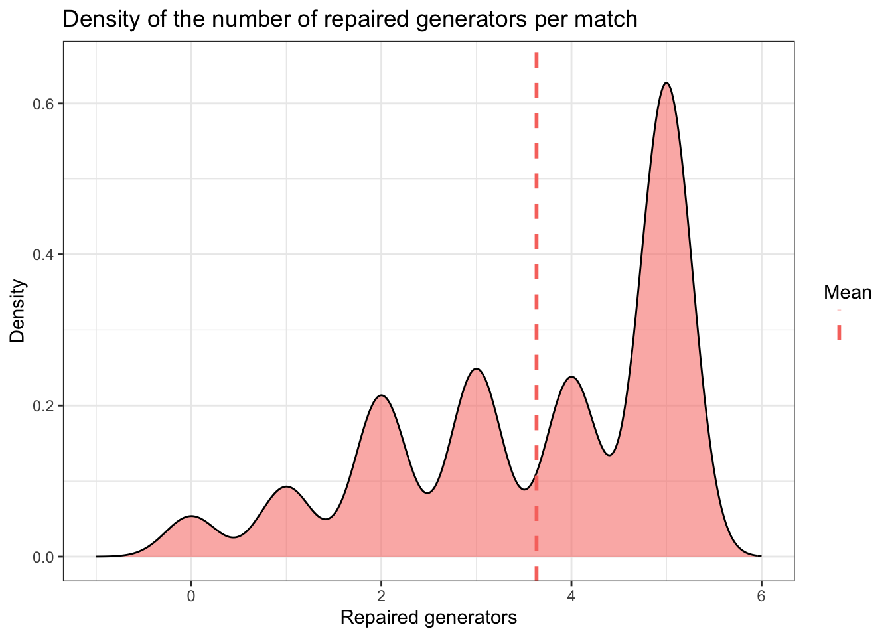
ggplot() +geom_bar(aes(x = dead_by_daylight$`# Finished generators`), fill ="#CC0000") +labs(title ="Number of repaired generators per match", x ="Repaired generators", y ="Count") +guides(fill ='none')
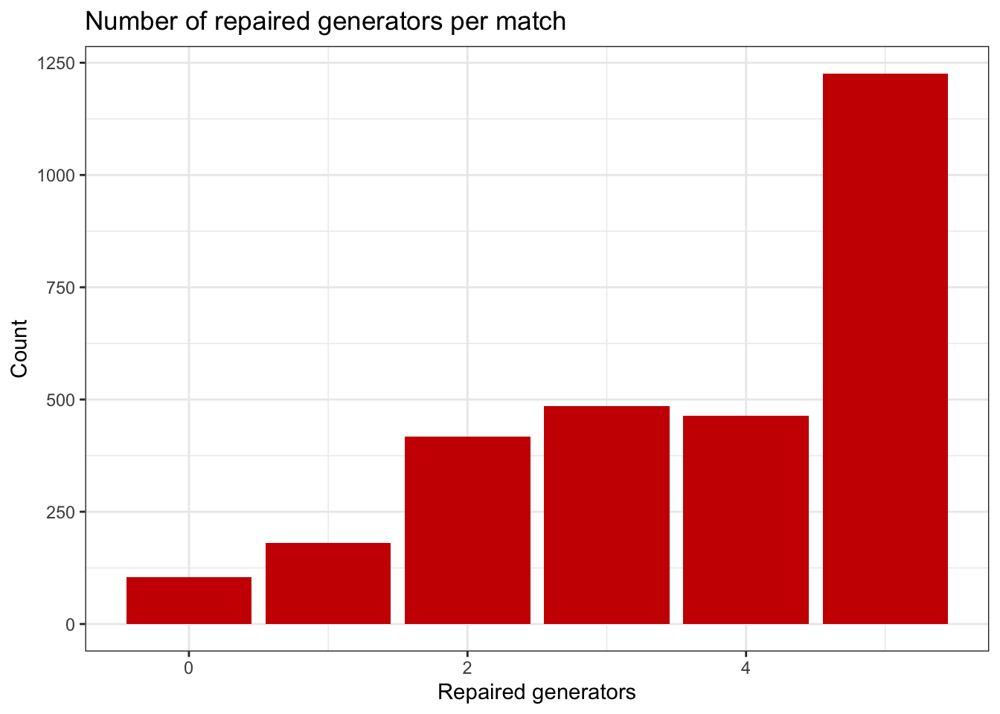
dead_by_daylight |>ggplot() +geom_density(aes(x = dead_by_daylight$`# Finished generators`, fill = Season, alpha =0.3)) +facet_wrap(~factor(Season, c("February", "March", "April", "May", "June", "July", "August", "September", "October", "November", "December", "January"))) +labs(title ="Density of the number of repaired generators per match per season", x ="Repaired generators", y ="Density") +scale_alpha(guide ='none') +guides(fill ='none') +expand_limits(x =c(-2,7), y =c(0,1))
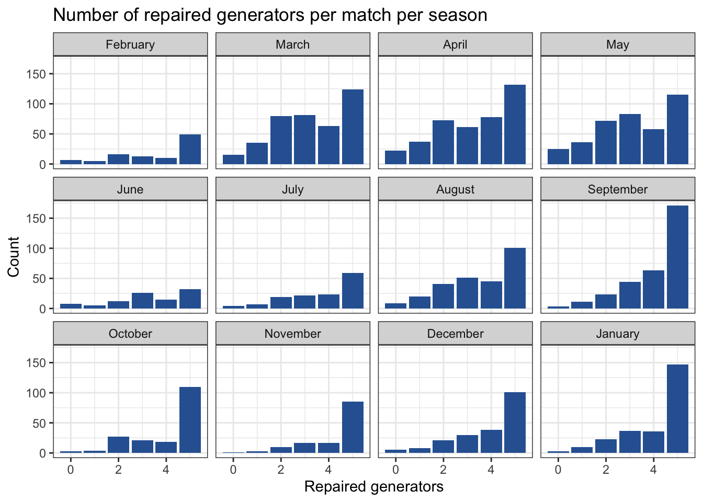
dead_by_daylight |>ggplot() +geom_bar(aes(x = dead_by_daylight$`# Finished generators`), fill ="#CC0000") +facet_wrap(~factor(Season, c("February", "March", "April", "May", "June", "July", "August", "September", "October", "November", "December", "January"))) +labs(title ="Number of repaired generators per match per season", x ="Repaired generators", y ="Count") +scale_alpha(guide ='none') +guides(fill ='none')
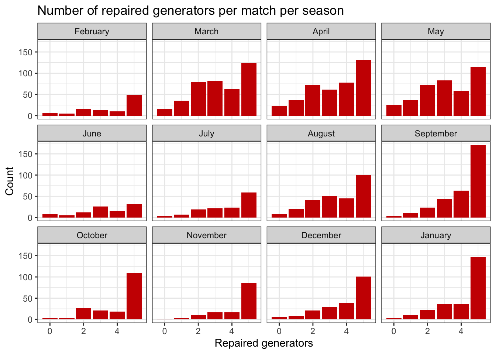
Escape Density
ggplot() +geom_density(aes(x = dead_by_daylight$`# Escaped Survivors`, fill ="", alpha =0.3)) +geom_vline(aes(xintercept =mean(dead_by_daylight$`# Escaped Survivors`), colour =""), linewidth =1, linetype ='dashed') +labs(title ="Density of the number of escaped survivors per match", x ="Escaped survivors", y ="Density", colour ="Mean") +scale_alpha(guide ='none') +guides(fill ='none') +expand_limits(x =c(-1,5), y =c(0,0.65))
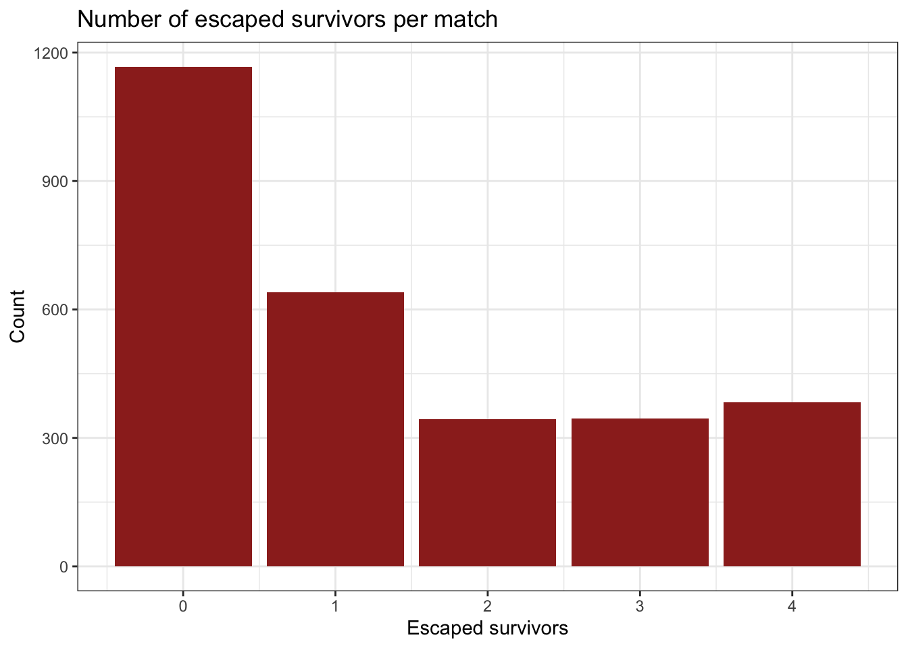
ggplot() +geom_bar(aes(x = dead_by_daylight$`# Escaped Survivors`), fill ="#CC0000") +labs(title ="Number of escaped survivors per match", x ="Escaped survivors", y ="Count") +guides(fill ='none')
dead_by_daylight |>ggplot() +geom_density(aes(x = dead_by_daylight$`# Escaped Survivors`, fill = Season, alpha =0.3)) +facet_wrap(~factor(Season, c("February", "March", "April", "May", "June", "July", "August", "September", "October", "November", "December", "January"))) +labs(title ="Density of the number of escaped survivors per match per season", x ="Escaped survivors", y ="Density") +scale_alpha(guide ='none') +guides(fill ='none') +expand_limits(x =c(-2,7), y =c(0,1))
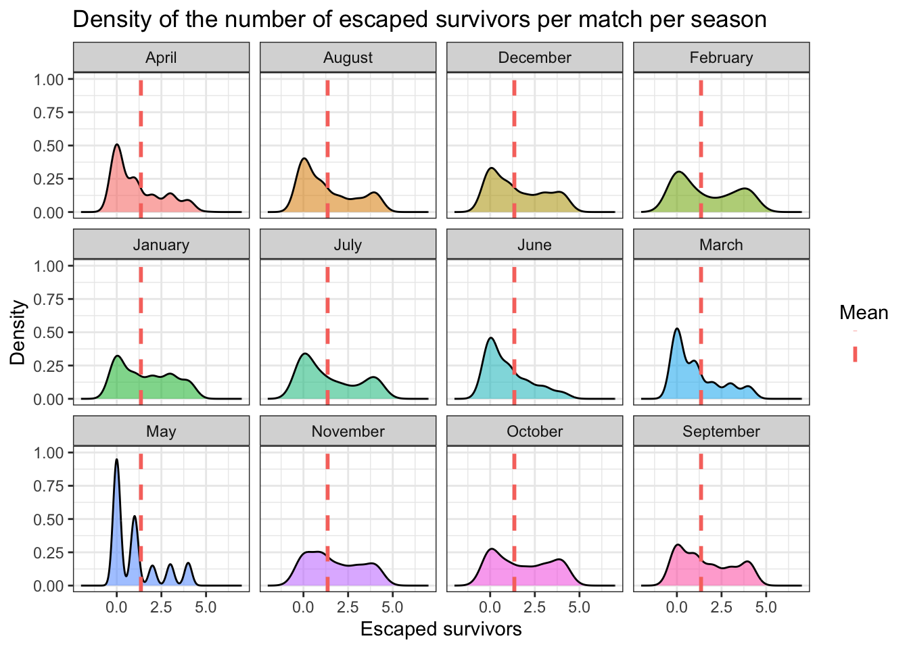
dead_by_daylight |>ggplot() +geom_bar(aes(x = dead_by_daylight$`# Escaped Survivors`), fill ="#CC0000") +facet_wrap(~factor(Season, c("February", "March", "April", "May", "June", "July", "August", "September", "October", "November", "December", "January"))) +labs(title ="Number of escaped survivors per match per season", x ="Escaped survivors", y ="Count") +scale_alpha(guide ='none') +guides(fill ='none')
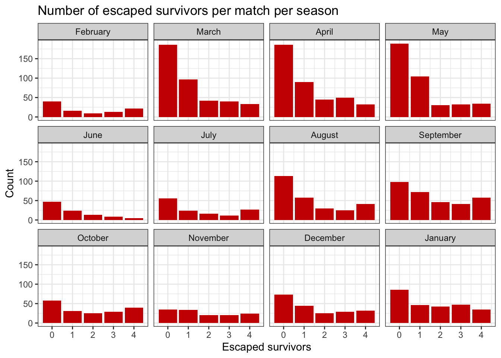
Let’s have a look at our escape rates whenever 5 generators where repaired:
DbD_5gens <- dead_by_daylight |>filter(`# Finished generators`==5)ggplot() +geom_density(aes(x = DbD_5gens$`# Escaped Survivors`, fill ="", alpha =0.3)) +labs(title ="Density of the number of escaped survivors per match\nwhere 5 generators where repaired", x ="Escaped survivors", y ="Density") +scale_alpha(guide ='none') +guides(fill ='none') +expand_limits(x =c(-1,5), y =c(0,0.65))
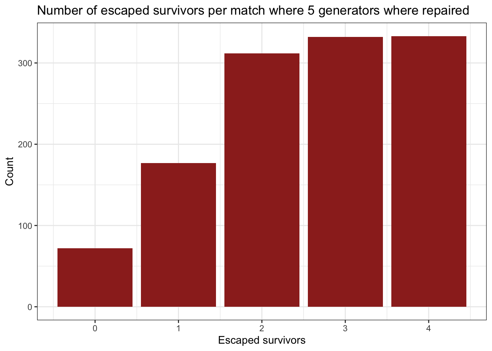
Escape and repair density depending on SBMM
dead_by_daylight |>ggplot() +geom_density(aes(x = dead_by_daylight$`# Finished generators`, fill = SBMM, alpha =0.3)) +facet_wrap(~SBMM) +labs(title ="Density of the number of repaired generators per match depending on SBMM", x ="Repaired generators", y ="Density") +scale_alpha(guide ='none') +guides(fill ='none') +expand_limits(x =c(-1,6), y =c(0,0.7))
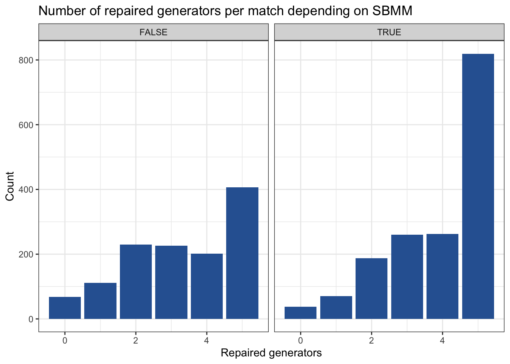
dead_by_daylight |>ggplot() +geom_density(aes(x = dead_by_daylight$`# Escaped Survivors`, fill = SBMM, alpha =0.3)) +facet_wrap(~SBMM) +labs(title ="Density of the number of escaped survivors per match depending on SBMM", x ="Escaped survivors", y ="Density") +scale_alpha(guide ='none') +guides(fill ='none') +expand_limits(x =c(-1,5), y =c(0,0.7))
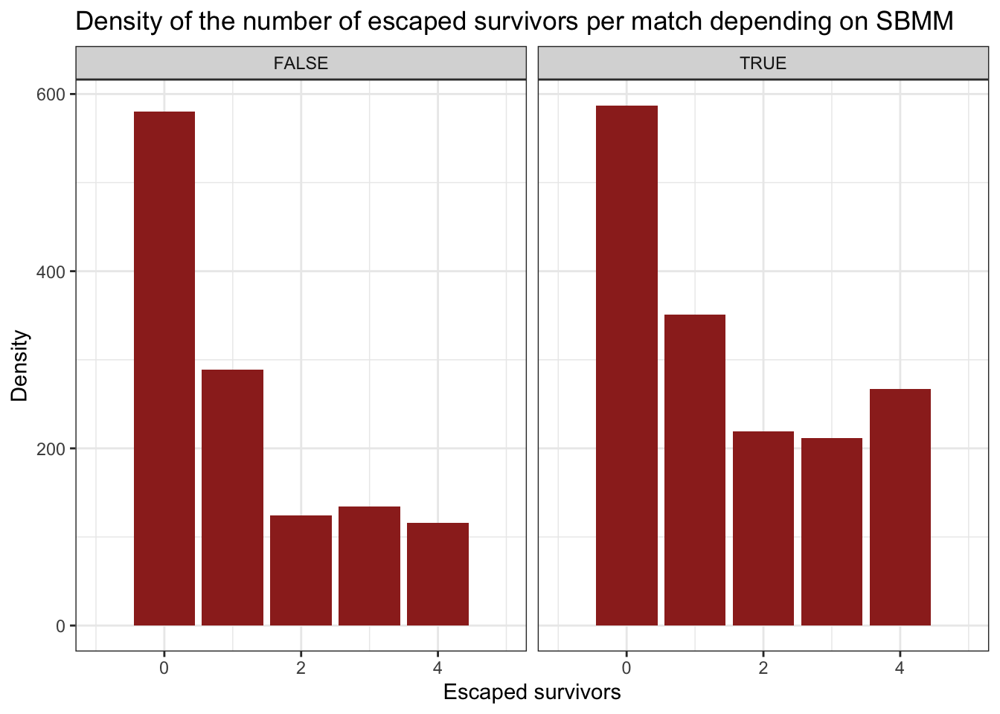
Killer occurrences
ggplot() +geom_bar(aes(y =fct_infreq(dead_by_daylight$Killer)), fill ="#CC0000") +guides(fill ='none') +labs(title ="Number of occurences of each killer", x ="Count", y ="Killer")
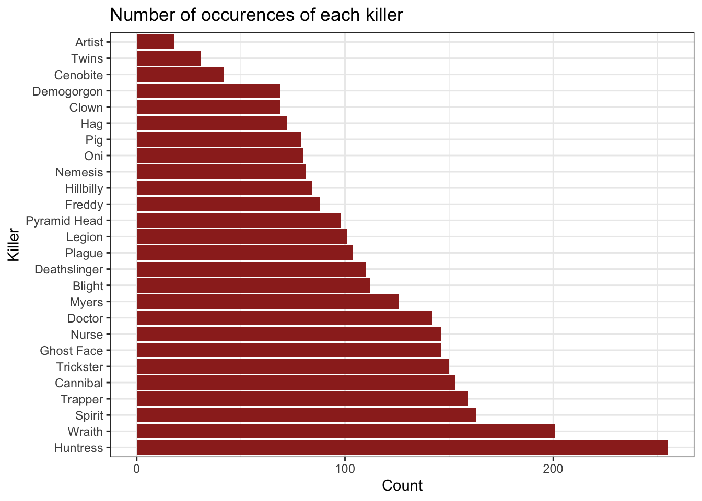
Map occurrences
ggplot() +geom_bar(aes(y =fct_infreq(dead_by_daylight$Map)), fill ="#CC0000") +guides(fill ='none') +labs(title ="Number of occurences of each map", x ="Count", y ="Map")
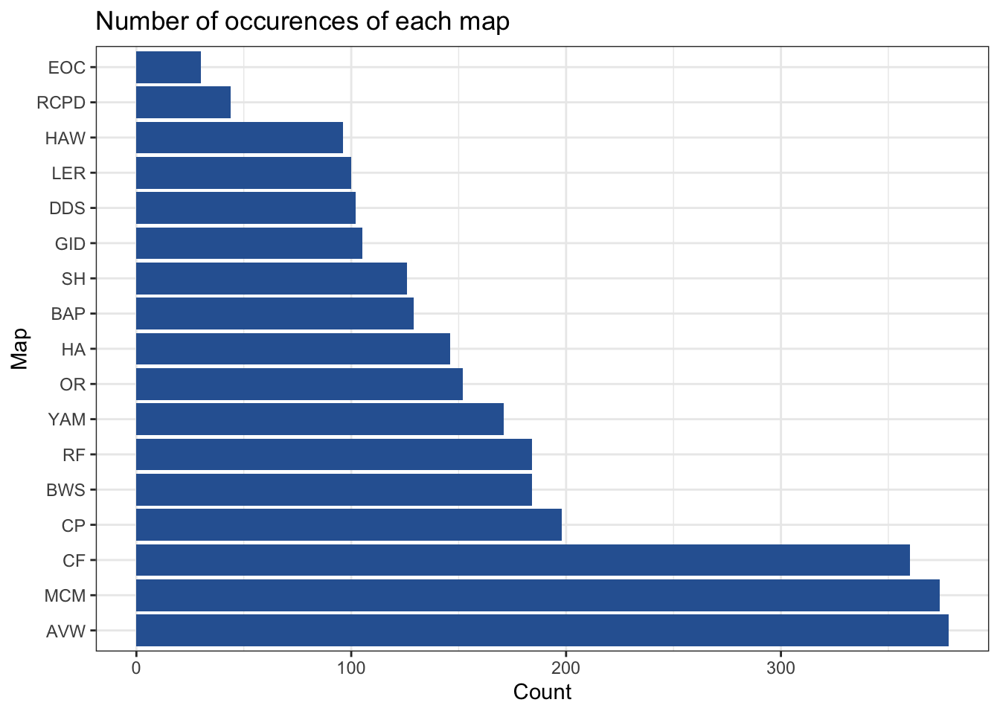
Repairs and Escapes density per map
dead_by_daylight |>ggplot() +geom_density(aes(x = dead_by_daylight$`# Escaped Survivors`, fill = Map, alpha =0.3)) +facet_wrap(~Map) +labs(title ="Density of the number of escaped survivors per match per map", x ="Escaped survivors", y ="Density") +scale_alpha(guide ='none') +guides(fill ='none') +expand_limits(x =c(-1.5,5.5), y =c(0,0.6))
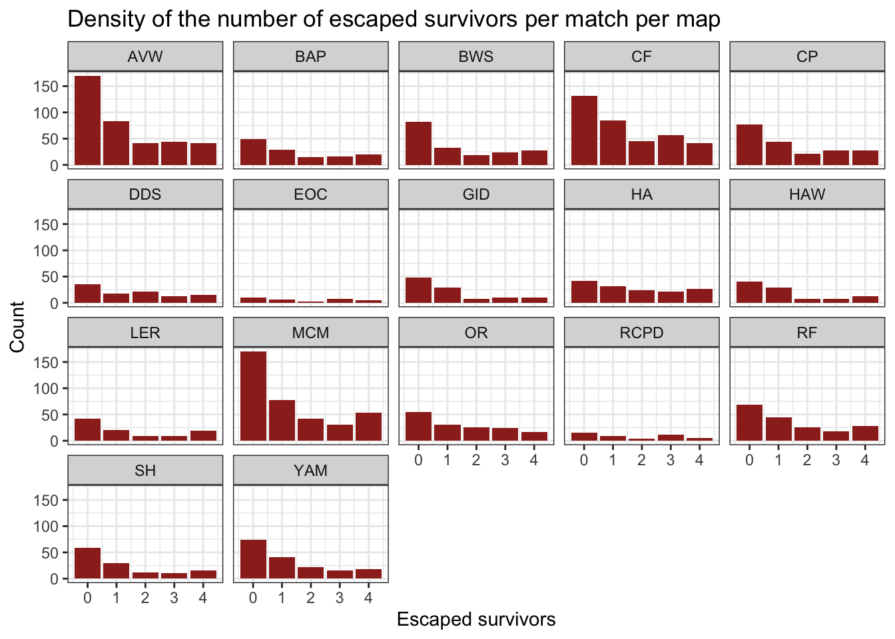
dead_by_daylight |>ggplot() +geom_density(aes(x = dead_by_daylight$`# Finished generators`, fill = Map, alpha =0.3)) +facet_wrap(~Map) +labs(title ="Density of the number of repaired generators per match per map", x ="Repaired generators", y ="Density") +scale_alpha(guide ='none') +guides(fill ='none') +expand_limits(x =c(-1.5,6.5), y =c(0,0.6))
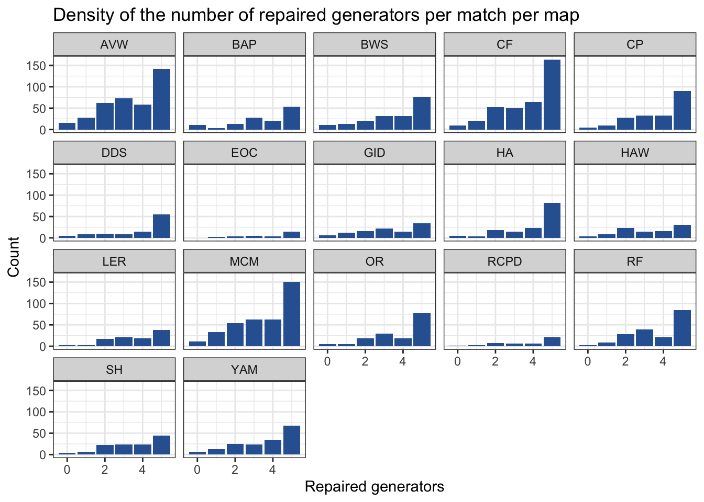
Gate escapes vs. Hatch escapes
dead_by_daylight <-mutate(dead_by_daylight, gate_escapes =`# Escaped Survivors`-`# Hatch escapes`)ggplot() +geom_bar(aes(x = dead_by_daylight$gate_escapes), fill ="#CC0000") +labs(title ="Number of survivors who escaped through the gates per match", x ="Number of survivors who escaped through the gates", y ="Count") +guides(fill ='none')
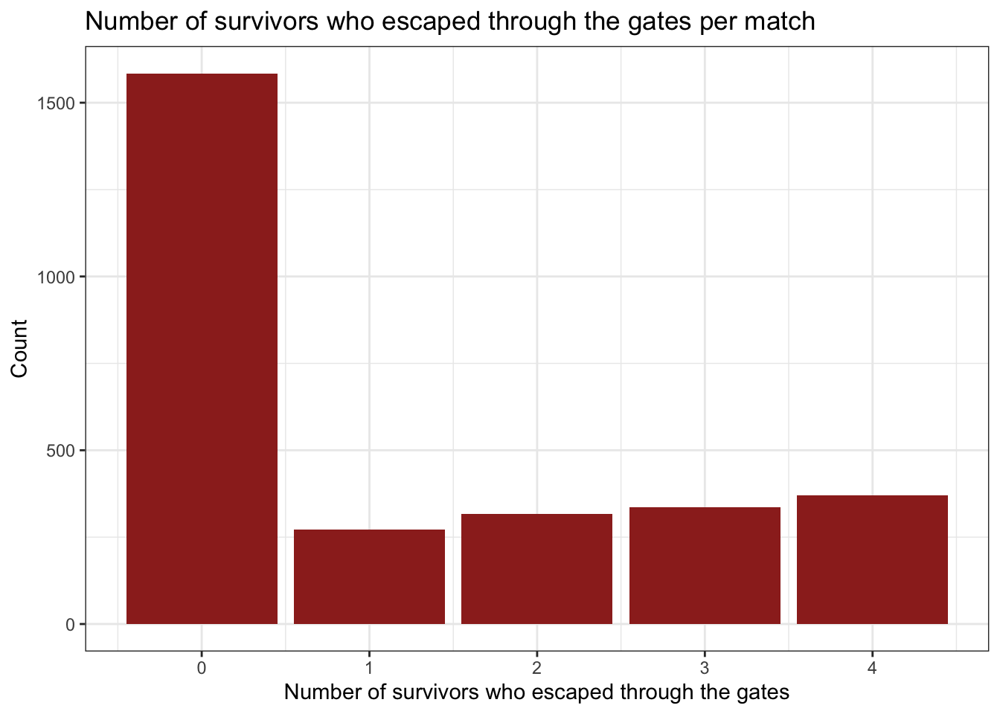
ggplot() +geom_bar(aes(x = dead_by_daylight$`# Hatch escapes` ), fill ="#CC0000") +labs(title ="Number of survivors who escaped through the hatch per match", x ="Number of survivors who escaped through the hatch", y ="Count") +guides(fill ='none')
#ggplot() +#geom_bar(aes(x = DbD_1esc$`# Hatch escapes`), fill = "#CC0000") +#labs(title = "Number of survivors who escaped through the hatch per match", x = "Number of survivors who escaped through the hatch", y = "Count") +#guides(fill = 'none') #DbD_1esc |>#ggplot() +#geom_bar(aes(y = species, fill = sex), position = "fill") +#scale_x_continuous(labels = scales::percent, position = "top",#expand = c(0, 0)) + labs(x = NULL, y = NULL)
Hatch escapes depending on the killers
Hatch escapes depending on the maps
Relationship between repair rate and escape rate
ggplot(dead_by_daylight, aes(x =`# Finished generators`, y =`# Escaped Survivors`)) +geom_point() +geom_smooth(method ="lm", formula ='y ~ x', se =FALSE) +labs(x ="Repaired Generators",y ="Escaped Survivors",title ="Escape rate as a function of the repair rate")